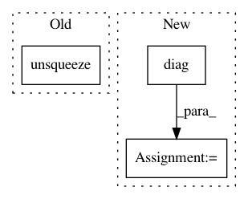

d278768807dff0c1920795073a219577571959d7,gpytorch/lazy/kronecker_product_added_diag_lazy_tensor.py,KroneckerProductAddedDiagLazyTensor,logdet,#KroneckerProductAddedDiagLazyTensor#,103
Before Change
noise = self._diag_tensor[0, 0]
sub_eigs = []
for lazy_tensor in self._lazy_tensor.lazy_tensors:
sub_eigs.append(lazy_tensor.evaluate().symeig(eigenvectors=True)[0][:, 0].unsqueeze(-1))
eigs = sub_eigs[0].matmul(sub_eigs[1].t())
return torch.log(eigs + noise).sum()
After Change
def logdet(self):
noise = self._diag_tensor[0, 0]
sub_eigs = [DiagLazyTensor(svd_decomp.S) for svd_decomp in self._kron_svd]
sub_eigs_kronecker = KroneckerProductLazyTensor(*sub_eigs).diag()
return torch.log(sub_eigs_kronecker + noise).sum()
@property
def _kron_svd(self):
In pattern: SUPERPATTERN
Frequency: 4
Non-data size: 3
Instances
Project Name: cornellius-gp/gpytorch
Commit Name: d278768807dff0c1920795073a219577571959d7
Time: 2020-06-26
Author: wjm363@nyu.edu
File Name: gpytorch/lazy/kronecker_product_added_diag_lazy_tensor.py
Class Name: KroneckerProductAddedDiagLazyTensor
Method Name: logdet
Project Name: cornellius-gp/gpytorch
Commit Name: 348122d499073a7a58b21d6e5544bc4b47a9ee94
Time: 2020-06-26
Author: wjm363@nyu.edu
File Name: gpytorch/lazy/kronecker_product_added_diag_lazy_tensor.py
Class Name: KroneckerProductAddedDiagLazyTensor
Method Name: logdet
Project Name: cornellius-gp/gpytorch
Commit Name: a7a12d157766b69cf4b1ddbb5fcdacfe485dc6fa
Time: 2019-04-03
Author: gpleiss@gmail.com
File Name: test/kernels/test_rbf_kernel.py
Class Name: TestRBFKernel
Method Name: test_ard
Project Name: cornellius-gp/gpytorch
Commit Name: a7a12d157766b69cf4b1ddbb5fcdacfe485dc6fa
Time: 2019-04-03
Author: gpleiss@gmail.com
File Name: test/kernels/test_scale_kernel.py
Class Name: TestScaleKernel
Method Name: test_ard